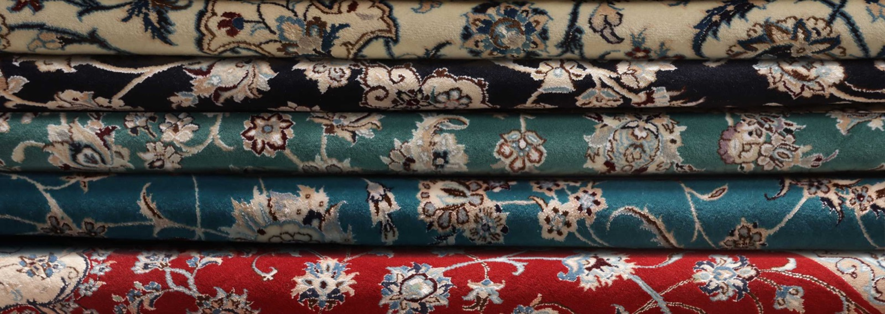
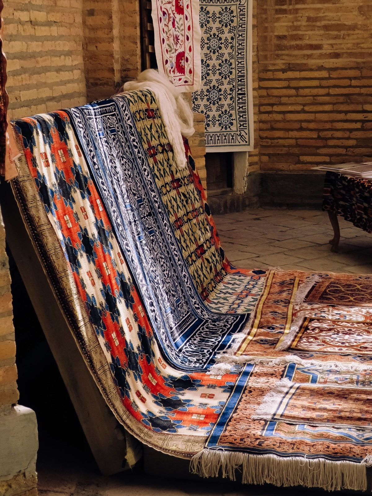

Vedere i tappeti dal vivo
Lo showroom permette di verificare materia, colori, proporzioni e dettagli reali.
Come raggiungerciOgni tappeto cambia con la luce, le proporzioni e lo spazio che lo circonda. Nello showroom Irana è possibile vedere e confrontare tappeti annodati a mano, materiali, colori e misure con una consulenza diretta.
Showroom a Cinisello Balsamo · Piazza Antonio Gramsci 2

Misure, luce naturale, colori, arredi e utilizzo quotidiano influenzano il risultato. Un tappeto può definire una zona, collegare elementi differenti oppure diventare il punto centrale dell’ambiente.
Per questo consigliamo di portare fotografie, misure e indicazioni sui materiali già presenti nella stanza.
La disponibilità cambia nel tempo. Per verificare un tappeto specifico, contatta lo showroom prima della visita.

In showroom è possibile osservare colori e materiali reali, confrontare più misure e valutare come il tappeto può dialogare con l’ambiente. La consulenza serve a restringere la scelta, non a forzare l’acquisto.
Prenota una visitaLo showroom permette di verificare materia, colori, proporzioni e dettagli reali.
Come raggiungerciTappeto.online raccoglie una selezione consultabile per tipologia, misura, colore e stile.
Vai a tappeto.onlineInvia o porta immagini generali della stanza e degli arredi.
Indica le dimensioni disponibili e la disposizione dei mobili.
Colori, materiali e riferimenti aiutano a preparare una prima selezione.
Osserva dal vivo i tappeti e valuta proporzioni, materia e tonalità.
Informazioni utili per preparare la scelta e il confronto in showroom.
Sì. Lo showroom permette di confrontare dal vivo materiali, colori, misure e manifatture differenti.
Non è obbligatorio durante gli orari di apertura, ma un contatto anticipato è utile per preparare una selezione coerente con ciò che stai cercando.
Fotografie dello spazio, misure indicative, colori degli arredi e qualsiasi riferimento utile.
Il catalogo online presenta una selezione ampia, ma disponibilità e assortimento possono cambiare. Per un tappeto specifico è consigliabile contattare lo showroom.
La selezione comprende materiali e manifatture differenti. La disponibilità viene verificata al momento della richiesta.
Sì. Puoi inviare fotografie, misure e riferimenti direttamente su WhatsApp.
Invia le informazioni essenziali per restringere la scelta prima di vedere i tappeti dal vivo.